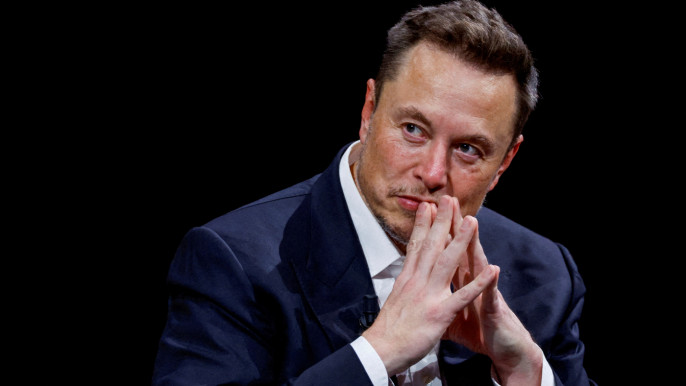

Elon Musk defends himself on X after antisemitic furor deepens

20 November 2023
X Corp, formerly known as Twitter, will file a lawsuit against Media Matters and those who attacked social media platform X, Elon Musk said on Saturday in a post on the platform, soon after major US companies paused their advertisements on the site.
"The split second court opens on Monday, X Corp will be filing a thermonuclear lawsuit against Media Matters and all those who colluded in this fraudulent attack on our company," Musk wrote in a post on X, without naming any other parties.
Liberal media watchdog group Media Matters for America earlier this week said it found that corporate advertisements by IBM, Apple, Oracle and Comcast's Xfinity were being placed alongside antisemitic content.
IBM on Thursday said it immediately suspended all advertising on Musk-owned X after the watchdog found its ads were placed next to content promoting Adolf Hitler and the Nazi Party.
Disney, Warner Bros Discovery and Comcast, Lions Gate Entertainment and Paramount Global said on Friday they were also pausing their ads on X. Axios reported that Apple would do the same.
Musk on Wednesday endorsed an antisemitic post on X that falsely claimed members of the Jewish community were stoking hatred against white people.
"This week Media Matters for America posted a story that completely misrepresented the real experience on X, in another attempt to undermine freedom of speech and mislead advertisers," a statement posted by Musk said.
"Media Matters created an alternate account and curated the posts and advertising appearing on the account's timeline to misinform advertisers about the placement of their posts."
Media Matters did not immediately respond to an emailed request seeking comment outside of business hours.
Advertisers have fled the site since Musk bought it in October 2022 and reduced content moderation, resulting in a sharp rise in hate speech on X, according to civil rights groups.
The White House on Friday condemned Elon Musk's endorsement of what it called a "hideous" antisemitic conspiracy theory on X. It accused Musk of an "abhorrent promotion of antisemitic and racist hate" that "runs against our core values as Americans".
"It is unacceptable to repeat the hideous lie ... one month after the deadliest day for the Jewish people since the Holocaust," White House spokesperson Andrew Bates said, referring to the 7 Oct attack by Palestinian group Hamas on Israel.